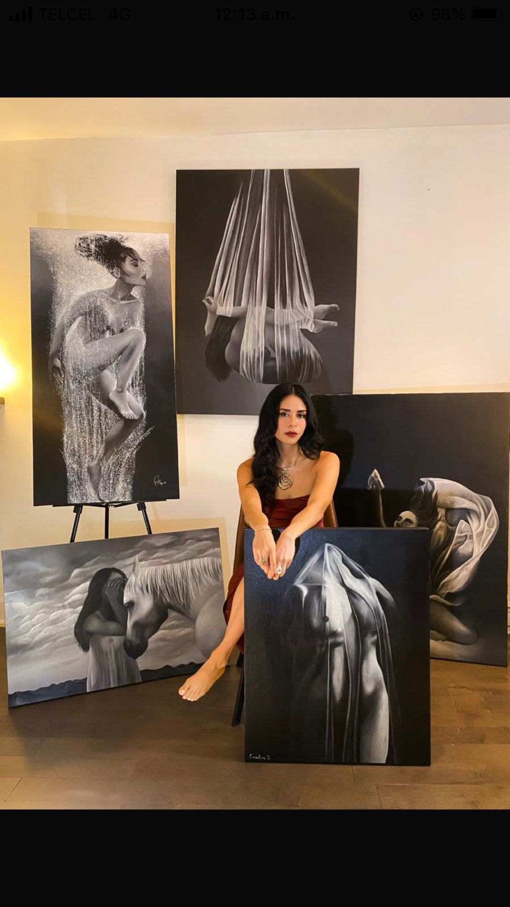

Carolina Delgado
Beyond Shadows · The Dream Series
Discover the paintings
Enter the galleryBeyond Shadows · The Dream Series
A space between the visible and the unseen.
The Dream Series explores transformation, confidence and self-acceptance through the feminine experience.
Meet the artist